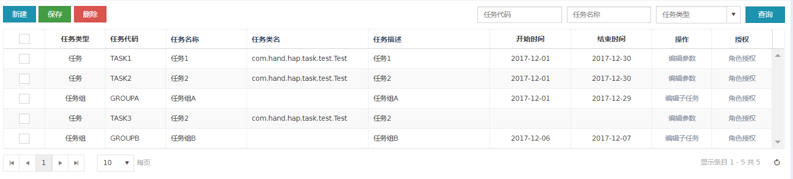
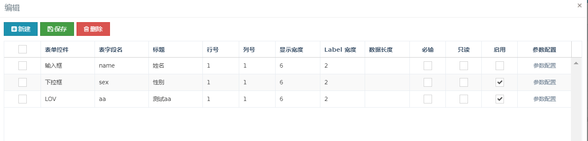
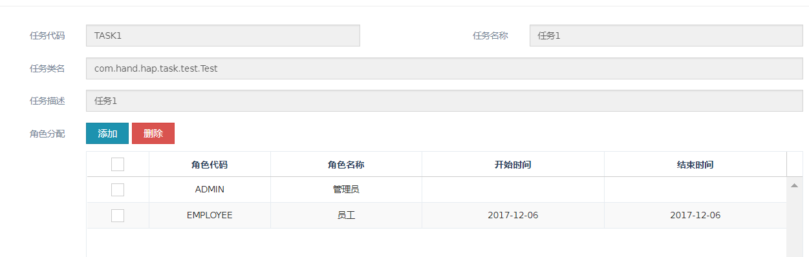
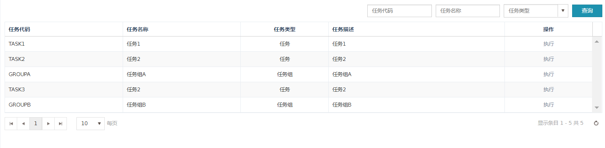
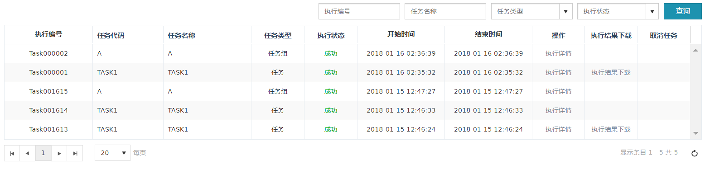

任务管理
HAP任务管理：开发人员新建一个任务或任务组，并创建任务类；任务可以动态配置需要的参数，参数类型及页面布局等，在执行时，带入自定义参数，在自定义类中执行任务。
任务管理
新建任务，任务组；定义任务的执行参数，或者定义任务组的子任务；通过角色分配任务执行权限
编辑任务的参数
表单控件：参数的控件类型；表字段名：表单的字段名称；标题：表单字段显示的label文本值
行号：控件在页面显示在第几行；列号：控件在页面显示第几列；
显示宽度：控件在页面显示的总宽度；Label宽度：控件中的Label的宽度；
数据长度：控件中输入的数据长度；

角色授权，角色拥有任务的执行权限在开始时间和结束时间内，没有配置时间的话，执行权限永久有效

任务执行
用户已授权的任务列表，点击执行，输入执行参数，确认执行

执行记录
用户已授权任务的执行记录列表，在任务的执行过程中，可以取消任务的执行，执行成功的任务可以产生直接结果文件，并在执行记录界面下载

点击查看执行详情，可以在执行详情界面下载执行记录。执行记录的文件为.log文件，内容排版格式支持扩展。用户可实现com.hand.hap.task.ExecuteLogConvertStrategy接口，并在config.properties中配置task.execute.logConvert.class=yourImplClass
执行记录(管理员)
所有任务的执行记录列表。
自定义任务类的规范说明
自定义任务类必须实现com.hand.hap.task.service.ITask 接口，com.hand.hap.task.service.ITask#execute方法为系统执行任务时的入口方法。
任务取消：设置当前执行的线程为中断状态，在执行代码的适当地方，判断线程是否中断，退出任务。
用户自定义的任务应尽可能根据执行的耗时情况进行细分，细分的代码段建议在com.hand.hap.task.service.ITask#safeExecute方法中执行（用户也可自行判断当前线程的中断状态，退出当前任务的执行）。
任务执行监听类实现说明
用户实现com.hand.hap.task.service.IExecuteListener接口，可以在任务执行前后做一些自定义操作